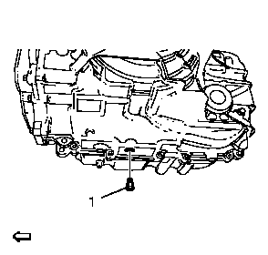
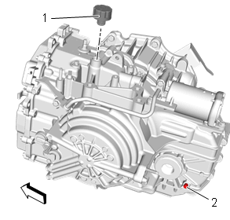

变速器油排放和加注
排放程序
警告：
当变速器处于工作温度时，在拆下检查/加注螺塞时要采取必要的保护措施，以避免被排放的油液烫伤。
警告：
变速器油很烫。将变速器油从变速器中排出时必须小心，以免造成人身伤害。
注意:
拆卸任何螺塞时一定要小心，清洁此螺塞的周围区域。
1.
举升和顶起车辆。
举升和顶起车辆

2.
放油螺塞(1)»拆下
3.
将变速器油排入合适的容器。
4.
在10分钟内将变速器油排放干净，检查变速器油量。如有必要，用正确的油以排放的量加注至合适油位。
变速器一般规格
、
近似油液容量
5.
检查收集的变速器油中是否有燃烧的油残留物、金属碎屑和其他异物。如果发现以上情况，则查找原因。
告诫：
有关紧固件的告诫
6.
放油螺塞(1)»安装并紧固
12 N•m（106 lb in)
加注程序
1.
降下车辆。

2.
变速器油加注口盖(1)»拆下
3.
用适量的正确变速器油加注变速器。
变速器一般规格
、
近似油液容量
4.
变速器油加注口盖(1)»安装
油位的检查
1.
起动发动机。
2.
踩下制动踏板并将换档杆挂到每个档位，且在每个档位停顿3秒钟。然后将换档杆挂回驻车档 (P)。
3.
使发动机以500至800转/分的速度怠速运行至少3分钟，从而使油液泡沫消散、油位稳定。松开制动踏板。
告诫：
当变速器油温度（TFT）为85 - 95℃（185 - 203℉）时，必须检查变速器油位。如果变速器油温度不是此温度值，视情况操作车辆或使油液冷却。如果在变速器油温度不在上述温度时设置油位，会导致变速器油加注不足或加注过量。变速器油温度超过95℃时可能加注不足，低于85℃时可能加注过量。变速器油加注不足会导致零件彻底磨损或损坏。加注过量的变速器将导致油液溢出通风管、油液起泡或泵的气穴现象。
4.
保持发动机运转，通过驾驶员信息中心或者故障诊断仪观察变速器油温度 (TFT)。
注意:
•
检查液位时，发动机必须运行且换档杆必须处于驻车档。
•
车辆必须处于水平状态，未能遵守此条将导致测量不准。
5.
用举升机举升车辆。
警告：
拆下变速器油加注螺塞时，发动机必须处于运行状态，否则会流失过多油液。变速器油可能很烫。由于不知道实际的油位，因此拆下加注螺塞时要远离。准备好容器，接收流出的油液。拆下加注螺塞后，切勿关闭发动机，否则会被从加注口喷出的热变速器油烫伤。
6.
车辆怠速运行时，拆下油位螺塞 (2)。允许任何油液排放至接油盘。
•
如果油液稳定地流出，则等待直到油液每秒滴出一次。继续进行步骤12。
•
如果没有油液流出，则加注油液直至从油位孔塞中每秒滴出一次。继续进行步骤7。
7.
降下车辆。
8.
变速器油加注口盖(1)»拆下
9.
车辆怠速运行时，通过油加注口盖孔加注油液，直至油从油位孔塞中流出。等待直至油液仅从油位孔塞中每秒滴出一次。
10.
变速器油加注口盖(1)»安装
11.
举升车辆。
告诫：
有关紧固件的告诫
12.
油位螺塞(2)»安装并紧固
12 N•m（106 lb in)
13.
降下车辆。
14.
停止发动机。